Project 2: RNN and GRU on The Time Machine Dataset
Overview
In this project, I implemented a basic recurrent neural network (RNN) and a gated recurrent unit (GRU) language model and trained them on the Time Machine dataset. The goal was to study how different hyperparameters and architectural choices affect perplexity, training stability, runtime, and output quality.
For Part 1, I trained a basic RNN and explored the effect of hidden size, number of time steps, learning rate, number of epochs, gradient clipping, and activation function. For Part 2, I trained a GRU model, tuned key hyperparameters, and performed an ablation study on the update and reset gates.
Dataset
I used the Time Machine dataset with character-level tokenization. Each training example consisted of a sequence of characters, and the model learned to predict the next character at each time step.
Part 1: Basic RNN
Task 1: Hyperparameter Tuning
In this section, I tuned the basic RNN by varying one hyperparameter at a time while keeping the other settings fixed. I compared training perplexity, validation perplexity, and generated text quality.
Hidden Size Experiment
I tested multiple hidden sizes while keeping the number of time steps, learning rate, number of epochs, gradient clipping, and activation function fixed. Increasing the hidden size increased the model capacity, but it did not always improve validation performance.
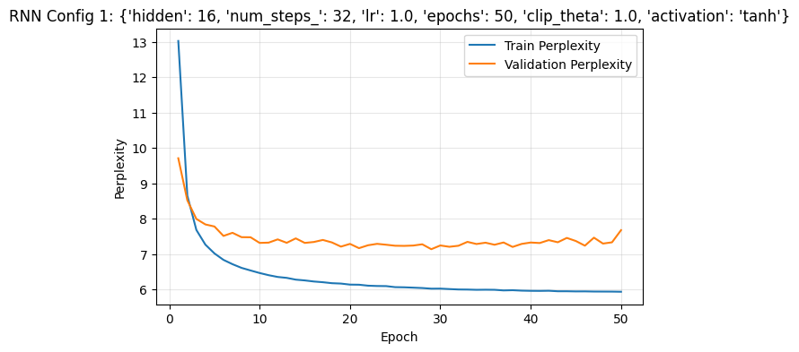
The best-performing hidden size was [16]. Smaller hidden sizes were more stable, while larger hidden sizes sometimes reduced training perplexity more aggressively without improving validation perplexity. This suggests that increasing model capacity alone does not guarantee better generalization.
Number of Time Steps Experiment
I then changed the number of time steps while keeping the remaining hyperparameters fixed. The number of time steps controls how much sequence context the RNN processes at once.
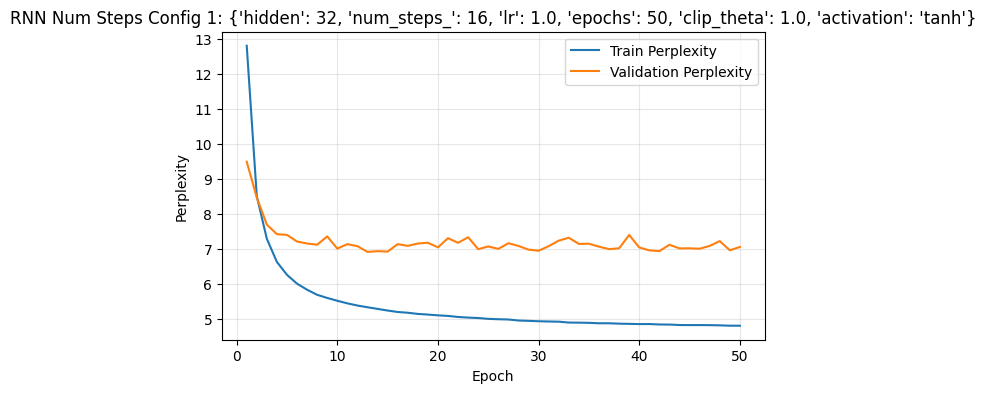
The best-performing number of time steps was [16]. Larger sequence lengths provided more context, but they also made training harder and sometimes less stable. Shorter sequence lengths were easier to optimize, but they limited the amount of context available to the model.
Learning Rate Experiment
I tested multiple learning rates while holding the other settings constant. The learning rate controlled how large each parameter update was during optimization.
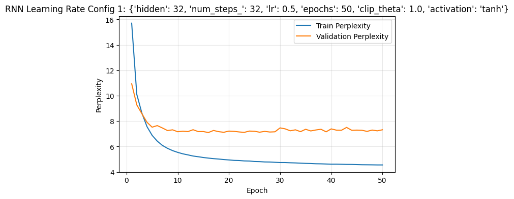
The best learning rate was [0.5]. Smaller learning rates trained more smoothly, while larger learning rates sometimes caused noisier validation behavior. This shows that optimization stability is an important part of RNN performance.
Epochs Experiment
I also tested different numbers of training epochs to study how longer training affects model performance.
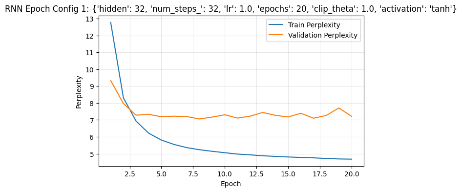
As the number of epochs increased, training perplexity continued to decrease, but validation perplexity often showed smaller improvements and more fluctuations. This suggests diminishing returns and possible overfitting after longer training.
Task 2: Gradient Clipping and Activation Function
In this section, I studied training stability by removing gradient clipping and by replacing the tanh activation with ReLU.
RNN Without Gradient Clipping
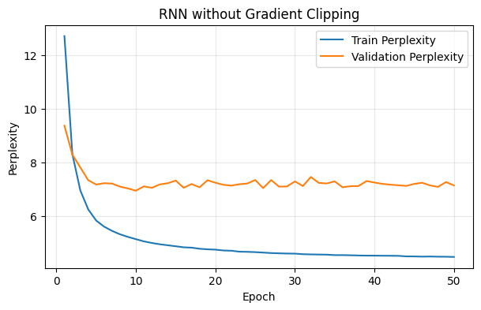
Without gradient clipping, the model still reduced training perplexity, but validation perplexity quickly flattened and fluctuated. This suggests that training became less stable and that improvements on the training set did not translate into strong validation gains. Gradient clipping helps limit very large updates and reduces instability in recurrent training.
RNN with ReLU Activation
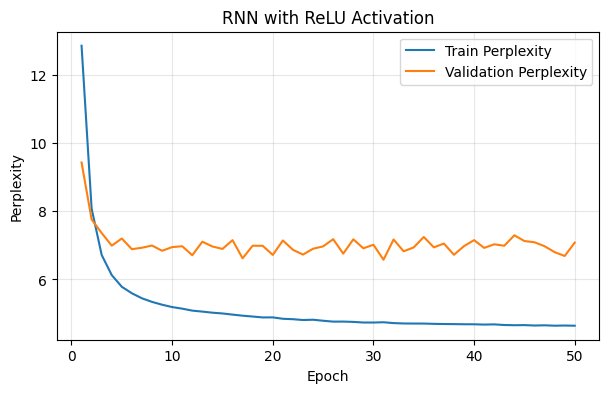
Replacing tanh with ReLU did not clearly improve validation performance. Although the model still learned, the validation curve remained noisy and the gap between training and validation perplexity stayed large. ReLU therefore did not remove the need for gradient clipping, and tanh remained the more reliable activation for this basic RNN setup.
Part 2: GRU
Task 1: Hyperparameter Tuning
In this section, I tuned the GRU model and compared the effect of hyperparameters on perplexity, runtime, and generated output.
Quick GRU Sanity Check

The quick test showed that the GRU implementation trained correctly: both training and validation perplexity dropped substantially in the early epochs, which confirmed that the model was learning meaningful sequence structure.
GRU Hidden Size Experiment
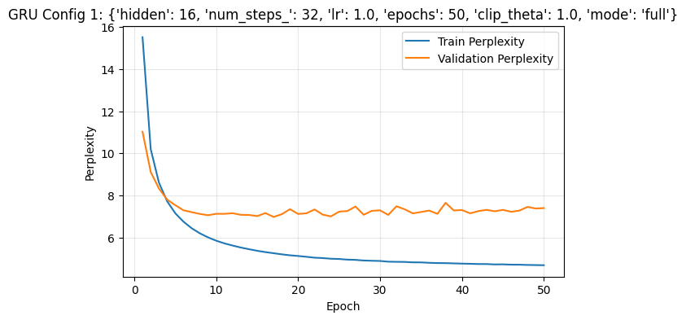
Among the tested hidden sizes, the hidden size of 16 gave the best validation performance. The hidden size of 32 showed more overfitting, and 64 performed significantly worse on validation perplexity despite reducing training perplexity more strongly. This suggests that larger hidden sizes gave the model too much capacity for this dataset and training configuration.
GRU Learning Rate Experiment
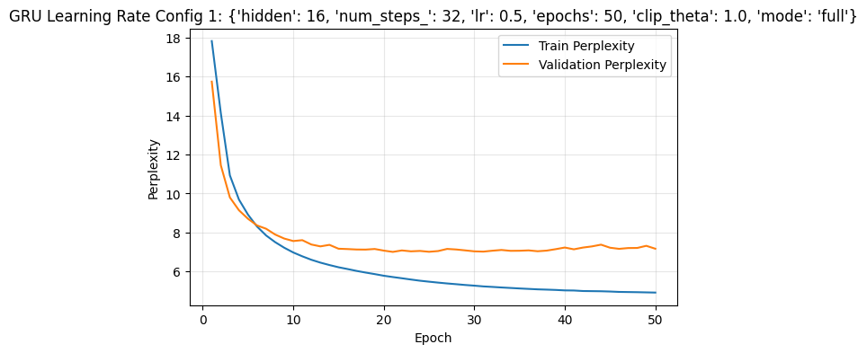
The learning rate of 0.5 gave the most stable and best overall validation behavior. Larger learning rates trained the model faster on the training set, but they produced noisier validation curves and slightly weaker generalization.
Task 2: Ablation Study on GRU Gates
To study the importance of the reset and update gates, I compared the full GRU with two ablation variants: only reset gate active and only update gate active.
Full GRU
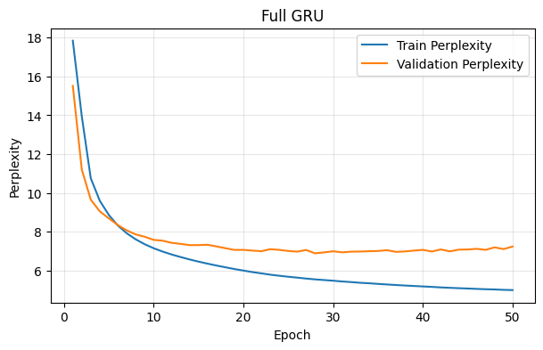
Only Reset Gate Active
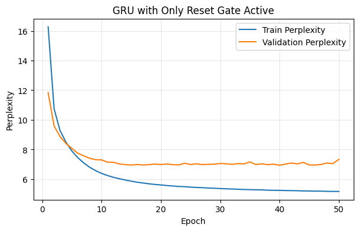
Only Update Gate Active
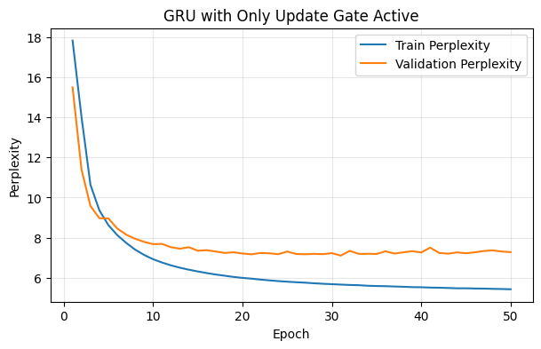
The full GRU achieved the best overall validation behavior. Both ablation variants still trained successfully, which means each single-gate version could still learn useful patterns, but both were slightly weaker than the full model.
The update-only version ended with a final validation perplexity of about 7.28, while the reset-only version ended with a final validation perplexity of about 7.34. The difference between the two ablation settings was small, but the full GRU remained the strongest and most stable overall. This suggests that both gates contribute to effective sequence modeling, and removing either one weakens generalization.
Example Output Sequences
Replace these with your actual generated outputs from the notebook.
Conclusion
Overall, the GRU performed more reliably than the basic RNN on this dataset. In the RNN experiments, hyperparameter changes strongly affected stability and validation behavior, and gradient clipping was important for keeping training under control. In the GRU experiments, the model handled sequence learning more effectively, and the best results came from a relatively small hidden size and a moderate learning rate.
The ablation study also showed that both GRU gates are useful. Although the model could still train when one gate was removed, the full GRU consistently gave the best overall performance, showing that the combination of reset and update mechanisms helps the network generalize better.